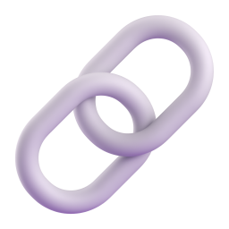

@mm.machine.ru02 / 06

Проверка ответа4 шага
1
шаг 1 из 4
Попроси источники
И открой хотя бы один. Ссылка может не существовать.
напиши
Дай ссылки на источники

Попросиисточники
И открой хотя бы один. Ссылка может не существовать.
Дай ссылки на источники

Иначе она придумает, лишь бы ответить.
Если не уверен, так и скажи

Поиском, а не той же нейросетью.


Задай тот же вопрос другой нейросети и сравни ответы.